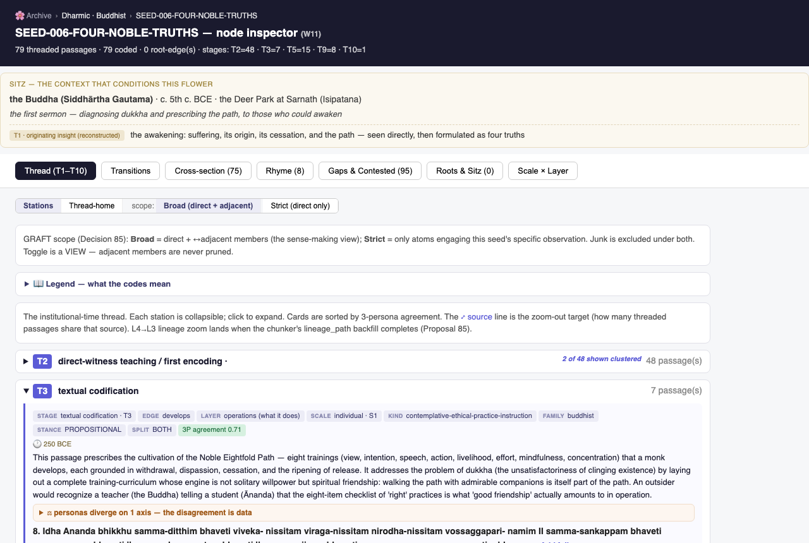
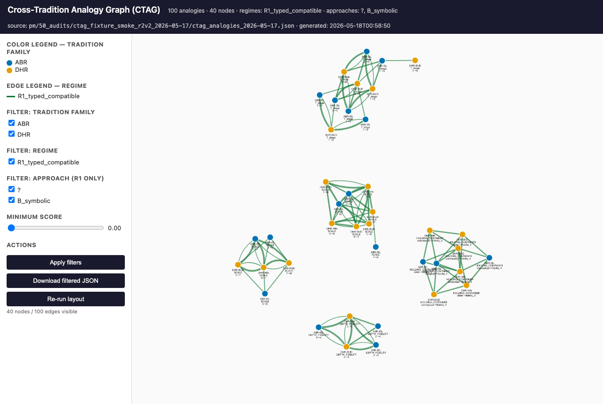
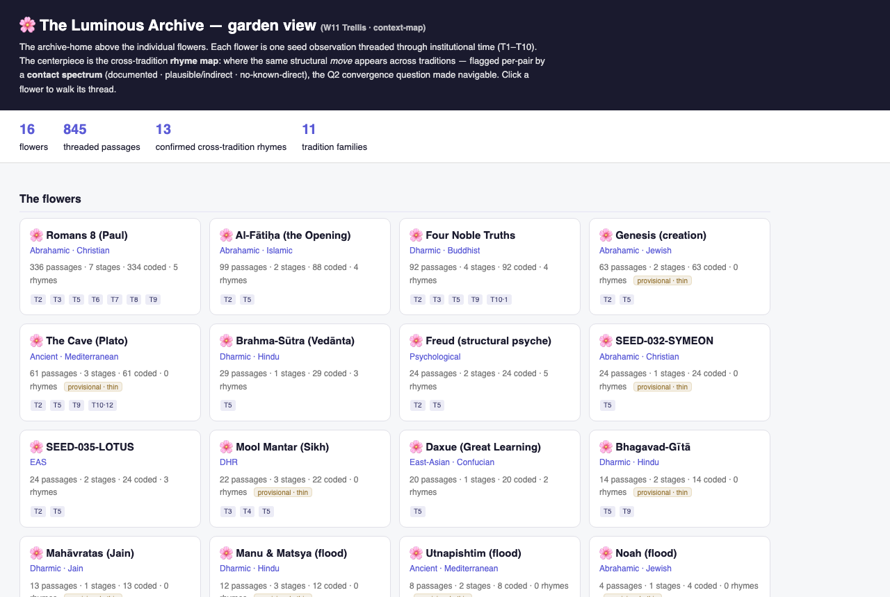

Reading the line:
Shopping (the want)
CRADLE A–E (acquisition)
Plumbing (populate · manifest · chunk)
Coding order 1–5 (analysis)
— the top bar gives the same line in the orientation doc's four words.
The Loom — the flywheel this line unrolls
The whole apparatus is one loop (Decision 53: CRADLE is the shuttle that carries threads in;
the stages are the heddles; the shopping overlay is the warp tension). The vertical line below is this loop, cut open and laid flat — stations 0–13.
Source schemas this draws on:
pm/40_architecture/the_loom_unified_architecture_2026-05-11.md (Decision 53 — the canonical unified picture) ·
CLAUDE.md §2.10 (CRADLE) · the factory-line doc. Not invented here — surfaced.
The workstream model, on the line. The 21 workstreams are the factory's staffing chart — five categories,
each living at a point on (or beside) the pipe. Badges below show who works each station.
I · CORPUS INFRA
beneath every station — W16 Corpus Integrity · W18 Bridge to Neon (SQLite→Postgres; soak 1/7 green) · the semantic index (lives in W19)
II · ACQUISITION
stations 0–5 — W3 CRADLE/FOUNDRY · W4 PRISM · W5/W6 Shopping Cart · W12 Fan-out Activation · W17 Continuous Intake
III · GARDEN-BUILDER
stations 8–12 — W2 Flowers (the ~100 goal) · W7 Chronology · W9 Throughput (⚠️ THE bottleneck for 100) · W10 RAIN · W13 Germination · W19 Flower-Builder Fairness (spec complete: IRR128+129)
IV · METAXY / FINDING
station 13 — W1 Metaxy/CTAG (rhyme engine) · W14 Narrative Seeds (constellations/mythemes)
V · OUTPUTS
after the line — W11 Trellis/Node-Inspector · W15 Imagery/Audio · W20 Design · W21 Essays / Grammar of Meaning
VI · GRADUATED ✅
W8 Coding-correctness gate — proved the cheap coder matches the 3-model consensus 100% on T-staging; production coding now runs on it (station 11's standing validation)
Running beneath every station — the substrate the whole line stands on:
W16 Corpus Integrity
W18 Bridge to Neon
W19 · semantic index
— provenance enforcement, the single write door, the SQLite→Postgres migration, and the embedding index that will let
retrieval find the overlooked voices keyword search starves.
Phase 1 — Shopping · the want
orientation: Acquire begins · gaps surface from any stage, continuously
0
Gap surfaced W5/W6 Cart W17 Intake
"The seed-set needs the Buddha's first sermon — the Dhammacakkappavattana Sutta,
where the Four Noble Truths are first taught — plus its commentaries and modern receptions." The want is captured
the moment it's noticed.
the item is now: a want
What this station does
Nothing depends on memory — every gap becomes a database row the moment it's noticed.
Any gap — a missing text, a tradition with thin coverage, a citation to chase — is captured as a shopping-list row
the moment it surfaces, from any stage of the line. Nothing depends on remembering it later.
The four input streams (per the Loom) — everything funnels to one cart
bibliography flywheelkeyword / author surfacesdirect asks ("find me X")fidelity-upgrade (we hold a stub; fetch the full text)→one shopping cart · 917 live rows today
receipt:
shopping_list row, status=pendingPhase 2 — CRADLE A–E · acquisition: a want becomes a text we hold
orientation: Acquire · the self-feeding harvesting engine
1
Classify the input CRADLE-A W3 CRADLE
The want becomes a structured request:
type: scripture + book + academic era: ancient → modern reception
languages: Pāli · Sanskrit · Chinese · English tradition-hint: DHR-BUD
the item is now: a classified want
What this station does
Typing the want decides which archives even get asked.
A classifier reads the raw want and types it: what kind of artifact, what era, what languages, which tradition it
likely belongs to. The typing decides everything downstream — which archives even get asked.
receipt: classification columns on the
shopping_list row2
Route to clusters CRADLE-B W3 CRADLE W4 PRISM W12 Fan-out
The request fans out in parallel: SCRIPTURE (Sutta Central · 84000 · CBETA — the canonical
sutta in Pāli and its Chinese parallels), BOOK (translations, commentaries), ACADEMIC (Buddhist-studies
scholarship — with Japanese and South-Asian journals queried at the same priority as Western ones).
the item is now: routed queries, in flight
What this station does
Archives are chosen by what they CONTAIN — never by whose scholarship they are.
Six endpoint clusters (scripture / book / academic / oral / literary / manuscript), each with its own archive
priority list. One input can fire several clusters at once. The Parity Principle: archives are routed by what
they contain, never by whose scholarship they are — a Japanese journal on the suttas fires for any sutta query.
How PRISM feeds the router (counts queried live, 2026-06-12)
4,703 endpoints catalogued→PRISM tags each on 13 axes→3,750 archetype-tagged
matched by content, never by whose scholarship it is — full per-cluster lists in the toggle below
▸ which archives, by cluster (the named endpoints)
SCRIPTURE: Sutta Central · 84000 · CBETA · Sefaria · GRETIL · Qur'an APIs · Bible APIs
BOOK: Gutenberg · Internet Archive · Open Library · HathiTrust · Aozora (JP) · DLI (IN) · DOAB
ACADEMIC: CrossRef · Semantic Scholar · OpenAlex · CORE · AJOL (Africa) · SciELO (LATAM) · Redalyc · J-STAGE (JP) · CNKI (CN)
ORAL: AODL · Mukurtu · LoC American Folklife · Smithsonian Folkways
MANUSCRIPT: IIIF crawlers · Europeana · DPLA · Wayback CDX LITERARY: IA · Open Library · Gutenberg
Non-Western archives sit IN the priority lists, not in a side-list — that's the Parity Principle doing §2.8's work.
BOOK: Gutenberg · Internet Archive · Open Library · HathiTrust · Aozora (JP) · DLI (IN) · DOAB
ACADEMIC: CrossRef · Semantic Scholar · OpenAlex · CORE · AJOL (Africa) · SciELO (LATAM) · Redalyc · J-STAGE (JP) · CNKI (CN)
ORAL: AODL · Mukurtu · LoC American Folklife · Smithsonian Folkways
MANUSCRIPT: IIIF crawlers · Europeana · DPLA · Wayback CDX LITERARY: IA · Open Library · Gutenberg
Non-Western archives sit IN the priority lists, not in a side-list — that's the Parity Principle doing §2.8's work.
receipt: cluster assignments per query
3
Resolve CRADLE-C W3 FOUNDRY
Hits come back: the sutta itself (SN 56.11) with parallel recensions, translations,
commentarial layers, modern receptions. And every archive that was tried is logged — including the misses.
the item is now: resolver hits + a source-tried log
What this station does
The misses are logged too: corpus skew becomes visible data, not a hidden filter.
Resolvers run per cluster in priority order; first confident match wins. The misses matter as much as the hits:
the full source-tried log is the bias trail — if coverage of a text is thin in some language or region, that
skew becomes visible drift-data, never a hidden pre-filter.
The chain, and the funnel it draws from
try archive #1→archive #2→archive #3 · confident match ✓ — every miss logged
the funnel: 4,703 catalogued→3,190 built→3,175 healthy (276 dead — kept visible, that's the bias trail)
Who builds this — PRISM classifies, FOUNDRY casts
PRISM labels every endpoint (13 routing axes: cluster · geo · language · era · voice-tier · peer-review · …)
FOUNDRY casts the harvesters from ~8 reusable protocol molds — ~70% shared handler + 30% per-endpoint config — so endpoints batch-build instead of one-off
receipt: resolver hits + per-row source-tried log
4
Dedup CRADLE-D W16 Integrity
Do we already hold the Pāli canon? (Largely yes.) The hits converge by canonical identity —
only the genuinely new sources continue down the pipe; the rest attach to what's already held.
the item is now: a deduped candidate set
What this station does
Canonical texts live once — duplication is blocked before it happens.
Before anything is added, the candidate is checked against everything already ingested. Shared canonical texts
live once, at the parent — re-ingesting the same canon under every sub-tradition is exactly the corruption this
station exists to block.
receipt: dedup verdict against
sources + canonical_sources5
Ingest — the single write door CRADLE-E W16 Integrity W17 Intake
The sutta, its commentaries, and receptions enter the corpus through the one gateway:
full provenance stamped, bound to DHR-BUD.
The CARE gate lives here too: Indigenous material is always included + tagged for
community-stewardship review, never deferred or excluded. The 4NT passes through untagged — the gate exists,
and this item doesn't trip it.
the item is now: source rows we hold
What this station does
One door in. No provenance, no entry.
One write door; no bypass. Every row gets where-it-came-from, how-it-was-harvested, who-wrote-it provenance —
non-negotiable fields, enforced at the database layer, so every later coded value can be audited back to its origin.
And the flywheel turns here: each ingested text's bibliography surfaces the next gaps → back to station 0.
Every ingested text flows twice — the flywheel
the text→ flow 1: into the corpus→chunk → code → find
↻ flow 2: its bibliography→new gaps surfaced→back to station 0 — the engine feeds itself
receipt:
sources + canonical_sources rows, provenance completePhase 3 — Plumbing · every datum crosses these, however it arrived
orientation: Chunk · text → analytical atoms
6–7
Populate · Manifest W16 Integrity
The sutta's rows take their place in the corpus: fidelity tier set (full text held),
structural type detected (a sutta with formulaic verse structure), sub-tradition arbitrated (canonical home
Theravāda; Mahāyāna receptions tagged as receptions, not duplicates).
the item is now: a structured, placed source
What these stations do
The chunker has to know what kind of text it's holding before it cuts.
Bookkeeping with teeth: fidelity tiers (do we hold full text, partial, or just metadata?), structural typing
(the chunker needs to know a sutta from a sermon from an oral transcript), provenance enrichment, sub-tag arbitration.
receipt: manifest fields on
sources8
Chunk W16 Integrity
The sermon breaks into quotable atoms: "Idaṁ kho pana, bhikkhave, dukkhaṁ
ariyasaccaṁ…" — "This, monks, is the noble truth of dukkha…" Each truth, each turning,
each commentarial gloss becomes its own addressable passage.
the item is now: anchor passages — the analytical atoms
What this station does
Sources are containers; passages are the atoms — that's why 390k becomes 9.5M.
Sources are containers; passages are the unit of analysis. Chunking is why ~390k sources become ~9.5M passages —
one source yields many atoms, each individually quotable, codeable, and traceable to its exact location in the source.
Why source-count ≠ depth — the container/atom split
1 source (container)→▫▫▫▫▫▫ many passages (atoms)
corpus-wide: 389,993 sources→~9.5M passages (≈ 24 atoms per source, across 535 traditions)
receipt:
passages rows (L4 anchors)Phase 4 — The coding order 1–5 · analysis: an atom becomes a coded, threaded, rhyme-mined unit
orientation: Code (stations 9–11) then Find (stations 12–13)
9
classify coding-order 1 W10 RAIN W19 Fairness
Per atom: significance (the first teaching of the truths = canonical-tier), artifact type
(scripture vs commentary vs modern reception), tradition confirmed at the passage level.
the item is now: tagged atoms
What this station does
Cheap triage first, so expensive interpretation lands on the right material.
Cheap, scalable triage so the expensive interpretive coding lands on the right material first — and so a
commentary is never mistaken for the canon it comments on.
Why the coding order runs 1→2→3
1 classify→2 glossary→3 code
triage before expense · the tradition's own vocabulary before interpretation · tradition-internal before any comparison — the §2.1 anti-pre-anchoring discipline, built into the sequence
receipt: significance + artifact-type tags per passage
10
glossary coding-order 2 W2 Flowers
The tradition's own vocabulary is seeded before any coding:
dukkha samudaya nirodha
magga taṇhā majjhimā paṭipadā
the item is now: atoms + their tradition's own words
What this station does
The tradition's own words come before any analysis touches them.
Builds each tradition's in-vivo term glossary — and keeps growing it: when coding surfaces a term the glossary
lacks, the term flows back in (grounded-theory style). The glossary is a drift-check, never a cage.
receipt:
tradition_glossary entries11
code coding-order 3 · the current frontier W2 Flowers W9 Throughput ⚠️ W13 Germination W19 Fairness W8 gate ✅
Each atom is coded first in Buddhist terms — dukkha, not "suffering-concept";
taṇhā, not "desire" — then mapped: is this a move (operation) or a claim (interpretation)?
Where on the T1–T9 lineage chain (+ T10 orthogonal)? What scale (S0–S8), what depth? Three reviewers — insider · outsider · practitioner — code
independently; their disagreement is kept as data.
the item is now: coded passages, agreement-scored
What this station does
First-cycle coding speaks ONLY the tradition's language — and disagreement is kept as data.
The interpretive heart. First-cycle coding uses only the tradition's own vocabulary — no preset categories,
no imported hypothesis-space; the cross-tradition layer comes later, from aggregation, or not at all. Reliability is
measured per cell (inter-rater agreement, Krippendorff-α-style), so "qualitative" never means "unverifiable."
The three-reviewer panel — consensus never forced
passage→InsiderOutsiderPractitioner→agree = convergent data · diverge = kept as data (α per cell)
The grammar stack (mapping #2) — what the layer-coding records
Substrate — what's attended to (a felt, fixed self)→Operation — the move (loosening the self-construct)
→Outcome — what emerges (a restructured identity)→Paradigm — the claim ("no self", little-t or Big-T)
where a thing sits decides what it does — the same content can be a move, a product, or a claim
receipt:
passage_codes rows + ensemble agreement scores12
thread coding-order 4 W2 Flowers W7 Chronology W11 Trellis
The 4NT atoms assemble by T-stage into the seed's branching tree — from the sermon's own
encoding (T2), through textual codification (T3) and the scholarly-commentary layer (T5 — where the Visuddhimagga lives), to the living lineage today (T9 — Secular Buddhism, the podcasts). T10 (artistic reimagination) is orthogonal — a parallel axis, not a rung after T9. This is real: the live flower spans 4 lineage stages today.
the item is now: a thread — the morph made visible
What this station does
The branching is the finding.
Assembles every passage anchored to one seed into the branching tree of its institutional life — mapping #1 as a
data structure. One branch faithful codification, one evacuation-into-slogan, one re-encounter. The branching
is the finding.
see it live: the 4NT inspector — every passage, stage, and code, walkable

receipt:
thread_membership rows → the threads-tree13
rhyme coding-order 5 W1 Metaxy/CTAG W14 Narrative Seeds
The coded 4NT operations are mined for cross-tradition analogies — A:B::C:D structures shared
with traditions that never met it. The live flower carries 5 confirmed rhyme-edges, each flagged on the
contact spectrum (documented · plausible · no-known-direct).
the item is now: a node in the rhyme-graph
What this station does
Rhymes match moves, not words.
Computes similarity on the operation — the move, not the words. Zero lexical overlap required: fasting and
silence look nothing alike, yet fasting : appetite :: silence : speech. Convergence across traditions with no
historical contact is the thesis question (Q2), surfaced at scale.
The rhyme shape
fasting : appetite::silence : speech — matched on the relation, never on the words

receipt: rhyme-graph edges (the CTAG), contact-flagged
The finished good — the Four Noble Truths, in the garden today
The factory ships threads. This one is live and fully coded — these are
queried numbers, not projections:
92 passages threaded
92 coded (100%)
4 T-stages in bloom (T2 · T3 · T5 · T9 — DB-queried; the Jun-11 garden render still shows T10)
5 confirmed cross-tradition rhymes

See it live: the garden (
data/chunk_quality/_garden/garden.html) →
the Four Noble Truths flower → its inspector walks every passage, code, and rhyme-edge.After the line — the outputs the factory feeds (the finished threads flow onward):
W11 Trellis / Node-Inspector
W15 Imagery / Audio
W20 Design
W21 Essays / Grammar of Meaning
— the essay engine has its own factory-line page
— the Archive interface that renders the garden, the media layer, the design language, and the essays written from
the database. W8 ✅ graduated stands behind station 11 as
the validation that production coding rests on.
The tree itself — the 92, threaded, standing in their soil
Every dot is one real passage from
thread_membership, branch = its T-stage;
the strata below the ground line are the soil — the civilizational conditions the tree grew in
(conditioned-by edges to substrate-events). All queried live, 2026-06-12.Counts: T2=49 · T3=9 · T5=23 · T9=11 = 92 (
thread_membership, queried 2026-06-12).
Honest flag: the Jun-11 garden render shows a T10 chip for this flower; the DB today holds 4 stages, no T10 rows — reconcile before show-time.
Soil rows: tradition_substrate_attachment ⨝ civilizational_substrate_events (DHR-BUD: 3 · DHR-BUD-MAH: 2).
Walk any leaf: the 4NT inspector.Why the line is auditable, end to end — three properties make it a measurable factory rather
than a story: (1) every source tried is logged, including the failures — corpus skew becomes visible drift-data
(station 3); (2) one write door — nothing enters without provenance and dedup (station 5); (3) dashboards read
the database, not narration — every count on this page exists as rows, so "we have the Four Noble Truths" can never
be claimed without the receipts existing.